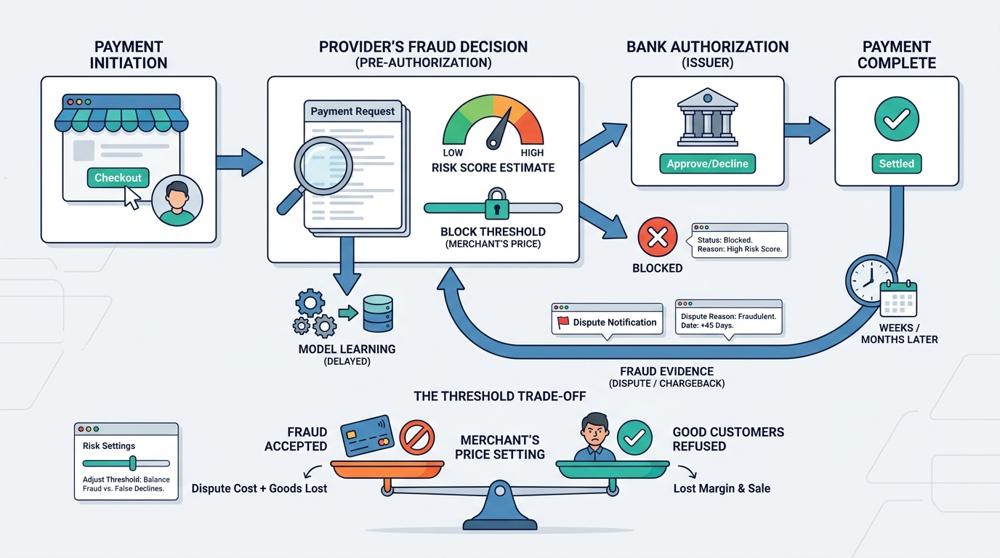

Part V — TRUST: Card Data, Fraud, Authentication and Compliance
Deciding in Milliseconds: Fraud and Risk Systems
AI-assisted: researched and written with Claude Code; illustrations generated with Gemini. How this works

Image generated by Google Gemini (gemini-3-pro-image-preview)